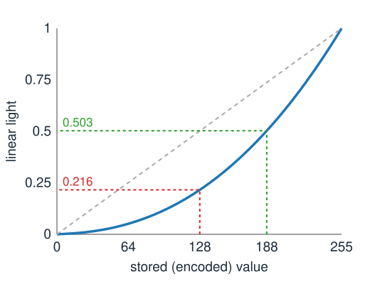

Last unit: colour is three numbers, a linear map of a spectrum. Today: what the three numbers in an RGB file are.
RGB is a device space: “full red” means this display’s red.
Stored values are gamma-encoded: not proportional to light. Blurring, resizing and averaging must be done on linear values.
Changing colour space is a 3 × 3 matrix: RGB → XYZ, → luminance, → Y′CbCr (with chroma subsampling).
White balance: undoing the lamp with a diagonal matrix, and when that fails.
Slides titled The math give the formulas and proofs; the ideas are complete without them.
RGB is a device space
“(255, 0, 0)” means: full drive of this display’s red primary. Without knowing the primaries and the white, it is not a colour.
sRGB fixes everything: the three primaries (the triangle of the last unit), the white point D65, and a transfer curve from stored values to light.
An untagged 8-bit image, a web page and the browser canvas are assumed to be sRGB.
A wide-gamut photo (Display P3) with the same numbers is a different, more saturated colour.
A camera’s raw data and a microscope’s detector are linear and in the camera’s own RGB: each sensor has its own three curves.
Gamma encoding

The stored value is not proportional to the light. The display decodes it with a curve close to a power 2.4.
Why: perceived lightness is roughly the cube root of light. Equal steps of stored value are roughly equal visible steps, so 8 bits suffice without banding in the darks.
Stored 128 is only 21.6 % of white’s light. Half of white’s light is stored as 188.
JPEG photos are encoded; raw camera data and microscope images are linear.
The math: the sRGB transfer function
Stored value C \in [0, 1] (the 8-bit code divided by 255), linear light C_\text{lin} \in [0, 1]:
C_\text{lin} = \begin{cases} C / 12.92, & C \le 0.04045 \\[2pt] \left(\dfrac{C + 0.055}{1.055}\right)^{2.4}, & C > 0.04045 \end{cases} \qquad C = \begin{cases} 12.92\,C_\text{lin}, & C_\text{lin} \le 0.0031308 \\[2pt] 1.055\,C_\text{lin}^{1/2.4} - 0.055, & \text{else.} \end{cases}
A short straight piece near black (no infinite slope at 0), then a power 2.4 with an offset. Overall it is close to a pure power 2.2.
Decode with a 256-entry lookup table; encode by the formula (or a finer table).
Why it matters: light adds, codes do not
Blur, resampling, averaging and mixing add up light. Done on encoded values they are wrong:
Black + white: the average of 0 and 255 is 128 in codes, but the average light is 0.5, code 188. A fine black/white stripe pattern looks like 188 from a distance, not 128.
Blurred highlights lose their glow; small bright lights shrink and dim.
Red meets green: blurring on codes gives a dark, muddy seam (codes 111, 144, 0 at the border instead of 176, 198, 0).
Downsampling fine bright detail on a dark background darkens the image.
Rule: decode → operate → encode. In quantitative work, never measure intensities on gamma-encoded exports.
Try it: blur in linear light
Linear maps between colour spaces
In linear RGB a colour is a mix of the display’s three primaries:
\text{colour} = R \cdot \text{(red primary)} + G \cdot \text{(green primary)} + B \cdot \text{(blue primary)}.
So XYZ is a matrix times linear RGB; for sRGB:
\begin{pmatrix} X \\ Y \\ Z \end{pmatrix} = \begin{pmatrix} 0.4124 & 0.3576 & 0.1805 \\ 0.2126 & 0.7152 & 0.0722 \\ 0.0193 & 0.1192 & 0.9505 \end{pmatrix} \begin{pmatrix} R \\ G \\ B \end{pmatrix}.
Columns: the XYZ of each primary at full drive. Middle row: the luminance weights; green carries 72 % of the brightness, blue only 7 %.
Display A → display B: M_B^{-1}M_A, a change of basis. Colours outside B’s gamut get components < 0 or > 1: they must be clipped (or mapped inwards).
The math: the matrix from primaries and white point
Primary k with chromaticity (x_k, y_k) has XYZ proportional to \mathbf p_k = (x_k/y_k,\; 1,\; (1 - x_k - y_k)/y_k). Unknown: its brightness s_k. Require that R = G = B = 1 gives the white \mathbf w (with Y_w = 1):
M = \begin{pmatrix} \mathbf p_R & \mathbf p_G & \mathbf p_B \end{pmatrix}\operatorname{diag}(s_R, s_G, s_B), \qquad \begin{pmatrix} \mathbf p_R & \mathbf p_G & \mathbf p_B \end{pmatrix}\mathbf s = \mathbf w .
One 3 \times 3 linear system for the three scales; the scales are the middle row of M (the luminance weights), since the middle entry of every \mathbf p_k is 1.
sRGB: primaries (0.64, 0.33), (0.30, 0.60), (0.15, 0.06), white (0.3127, 0.3290) give the matrix on the previous slide.
The display-design demo of the last unit computes exactly this.
Converting to grey is a choice
One colour image, four greys:
LuminanceY = 0.2126R + 0.7152G + 0.0722B on linear RGB: the physically right brightness.
LumaY' = 0.299R' + 0.587G' + 0.114B' on encoded values: the video standard, an approximation.
Channel mean(R + G + B)/3: treats the eye as equally sensitive to blue. Simple, often wrong.
One channel: often the best for analysis. In stained tissue or fluorescence, pick the channel with the contrast you need.
Test: red letters on a green background of equal luminance vanish in the luminance image but not in the mean. “Greyscale” is a projection, and you choose its direction.
Opponent channels and Y′CbCr
The visual system recodes the cone signals into one brightness and two colour-difference channels (red–green, blue–yellow), and it sees the colour differences with less detail.
Y′CbCr (JPEG, video) does the same with a matrix on encoded R′G′B′:
Chroma subsampling (4:2:0): keep Cb and Cr at half resolution in both directions. Half the data, almost invisible. Subsampling Y′ the same way is obvious.
Same idea as the low-pass filtering in the Fourier unit: drop the detail the eye does not use.
Rows 2 and 3 are (to rounding) 0.564\,(B' - Y') and 0.713\,(R' - Y'): the coefficients of each row sum to zero, so every grey has C_b = C_r = 128.
Invertible: decoding is the inverse matrix after removing the offset. 4:2:0 stores 1 + 2 \cdot \tfrac14 = 1.5 values per pixel instead of 3.
Because it acts on encoded values, Y′ is luma, not luminance.
Try it: colour as a matrix
White balance: undoing the lamp
The same white paper is orange under a light bulb and blue in shade; our eyes adapt and still call it white (colour constancy). A camera does not.
Camera responses: \mathbf c = A\,\operatorname{diag}(\text{lamp})\,\mathbf r. We want the colours under a reference light (daylight, D65).
von Kries (1902): scale each channel separately, \mathbf c' = D\,\mathbf c with D = \operatorname{diag}(w_\text{ref}/w), where w is the response to a white under the current lamp. A diagonal matrix.
Apply it to linear values: on encoded values a scaling of light is not a scaling of codes.
Works best in a basis close to the cones (or “sharpened” cone-like channels, as in the Bradford transform).
Estimating the white
The correction needs w, the camera’s response to white under this lamp:
Grey world: assume the scene averages to grey; w = the mean of each channel. Fails when one colour dominates: a forest turns grey-magenta.
White patch (max-RGB): assume the brightest values are white. Fails with a clipped highlight, which is “white” whatever the lamp.
A grey card (or a known white area) in the image: the most reliable.
In microscopy: the blank-field reference (light with no specimen) is a per-pixel white balance; the same idea as flat-field correction.
The math: diagonal in which basis?
Diagonal scaling in a basis given by an invertible B (rows: XYZ → cone-like channels), written in linear RGB:
\mathbf c' = M_{\text{XYZ}\to\text{RGB}}\,B^{-1}\,\operatorname{diag}\!\left(\frac{B M\,\mathbf w_\text{ref}}{B M\,\mathbf w}\right) B\,M\,\mathbf c, \qquad M = M_{\text{RGB}\to\text{XYZ}} .
B = I (on RGB): the camera channels; B = cone matrix: von Kries; B = Bradford’s “sharpened” matrix: narrower channels, usually the most accurate diagonal.
Exact only if the lamp change acts diagonally in that basis, which needs narrow-band channels. Broad, overlapping sensitivities (and metameric failure) leave an error.
With a known chart: fit a full 3 \times 3 matrix by least squares, \min_M \sum_i \|M\mathbf c_i - \mathbf t_i\|^2, i.e. M = TC^\top(CC^\top)^{-1}.
Try it: white balance
Forward pointer: stains absorb
Brightfield microscopy is different: stains absorb light. The transmitted light is I = I_0 \cdot 10^{-(\text{absorbance})}, a product, not a sum.
Take the optical density-\log_{10}(I/I_0) per channel: then two stains add up linearly again.
Separating hematoxylin and eosin is then a 3 \times 3 (or 3 \times 2) linear problem: the spectral unmixing elective (stain unmixing).
Summary
RGB numbers are device values; sRGB fixes the primaries, the white and the transfer curve.
Stored values are gamma-encoded: decode before blurring, resizing, averaging or measuring (128 + black/white: the light says 188).
Colour spaces are related by 3 × 3 matrices: RGB → XYZ (columns = primaries), luminance (its middle row), Y′CbCr (plus an offset; chroma can be subsampled).
White balance is a diagonal matrix on linear values, best in a cone-like basis; estimate the white by grey world, white patch or a grey card, and know how each fails.